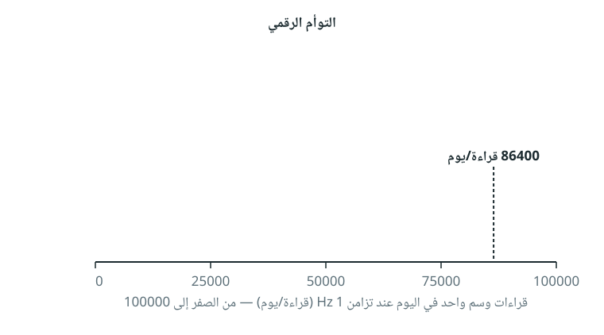

التوأم الرقمي
Digital Twin
نسخة رقمية حيّة لنظام فيزيائي أو عملية، مُزامَنة مع قياساتها بتردد ودقة محدَّدين صراحةً، فتُظهر الحالة الآنية وتسمح باختبار قرار قبل تنفيذه على الأصل.
التوأم الرقمي تمثيل رقمي لكيان أو عملية في العالم الحقيقي، يُزامَن مع الأصل بتردد ودقة محدَّدين، فيُظهر حالته الراهنة لا حالته عند التصميم فقط. ويقوم على ثلاثة أعمدة: نموذج رياضي أو بياناتي للأصل، وقناة قياس تُغذّيه بالحالة الفعلية، ومنطق تزامن يحدّد متى وكيف يُحدَّث النموذج. ويُستعمل في التشغيل والصيانة والتدريب: يُجرَّب تغيير نقطة تشغيل أو كشف عطل على النسخة الرقمية قبل تنفيذه على الأصل، فتُقاس النتيجة بلا مخاطرة على المعدّة. ومثال محطة: 500 وسم تُقرأ مرتين في الثانية لمدة ثلاثين يومًا تُنتج 2 592 000 000 قراءة، وبأربعة بايتات للقراءة تحتاج 10.37 جيجابايت، وهو ما يفرض قرارًا هندسيًّا في تردد التزامن لا في النموذج وحده. والحدّ الفاصل بين التوأم وغيره ليس جودة الرسم، بل اقتران الاتجاهين: قياس يصعد إلى النموذج، وقرار قابل للتحقق يعود إلى الأصل.
كيف تعمل الظاهرة؟
يبدأ التوأم بتعريف قابل للقراءة الآلية يصف الكيان ونقاط القياس ومتغيرات الحالة، ثم تُنشأ منه نسخة حالة تُملأ بالقراءات. وفي كل دورة تزامن تُقرأ الوسوم من نظام التحكم أو من قاعدة بيانات المستشعرات، وتُصفّى من الشواذ، ثم تُسقط على النموذج بإحدى طريقتين: تحديث الشروط الابتدائية ثم إعادة الحل (محاكاة متتابعة)، أو تصحيح الحالة بمرشّح كالمان يوزّع الفرق بين القياس والنموذج على المتغيرات بحسب موثوقية كل منهما. وتردد التزامن قرار هندسي: تردد أعلى يعني حالة أحدث وكلفة بيانات أعلى، ودقة أعلى تعني نموذجًا أفخم ومعايرة أدق.
العلاقة بالأرقام
وحدة التزامن هي التردد f بالهرتز، وعمر الحالة Δt = 1/f؛ فعند f = 1 Hz يكون عمر الحالة ثانية واحدة، وعند 0.1 Hz عشر ثوانٍ أي عشرة أضعاف. وحجم البيانات = عدد الوسوم × التردد × مدة التشغيل × حجم القراءة. لحساب 500 وسم عند 2 Hz في اليوم: 500 × 2 = 1000 قراءة/ثانية، و1000 × 86 400 = 86 400 000 قراءة يوميًا، وفي ثلاثين يومًا 86 400 000 × 30 = 2 592 000 000 قراءة، وبأربعة بايتات للقراءة 2 592 000 000 × 4 = 10 368 000 000 بايت = 10.37 جيجابايت. وإذا كان مسح نظام التحكم 500 ms وحلّ النموذج 200 ms، فأقصى عمر للحالة عند القرار 500 + 200 = 700 ms، ويُقارن هذا الرقم بزمن استجابة المعدّة لا بالرقم وحده.
مفاهيم متقاربة
الخلط الشائع أن كل نموذج رقمي توأم. الفاصل هو اقتران الاتجاهين: قياسات ترفع إلى النموذج وقرارات تعود إلى الأصل. نموذج بلا قياس حيّ محاكاة، وقياس حيّ بلا نموذج قابل للتشغيل لوحة متابعة، ونموذج يتغذى بالقياسات دون أن يشارك في قرار ظلّ رقمي. ويضاف فرق ثانٍ في العمر: التوأم يعيش مع الأصل ويُصان ويُعاير كلما تغيّر، أما نموذج التصميم فيُسلَّم مرة ثم يُهمل بعد إنجاز المشروع.
حدود التطبيق
ينكسر الادّعاء عندما تُترك الدقة غير معلنة: توأم بلا بيان خطأ نموذجه وبلا تردد تزامن صريح عرضٌ لا توأم. ويفقد صلاحيته إذا انقطع تغذّيه بالقياسات فصار أرشيفًا لا حالة. ولا يُعتمد في قرارات السلامة وحده إن لم تُعاير حدوده، لأن النموذج لا يعرف ما ليس في معادلاته كتآكل غير مرصود أو عيب تصنيع. وكل توسّع في نطاق التشغيل خارج المدى المعاير يُبطل الاستقراء ولو بدا الرقم مقبولًا.

| الكمية | القيمة | المصدر |
|---|---|---|
| قراءات وسم واحد في اليوم عند تزامن 1 Hz | 86 400 قراءة/يوم | [1] |
| فارق عمر الحالة بين تزامن 1 Hz وتزامن 0.1 Hz | 10 أضعاف | [1] |
| حجم بيانات 30 يومًا لـ500 وسم عند 2 Hz بأربعة بايتات للقراءة | 10.37 GB | [1] |
المصادر
- 1 Security and Trust Considerations for Digital Twin Technology (NIST IR 8356) — NIST — National Institute of Standards and Technology (2025). doi.org/10.6028/NIST.IR.8356 · اطُّلع عليه 2026-11-26
- 2 Nuclear Power Plant Design and Analysis Codes (Wang, Li, Allison, Hursin) — Woodhead Publishing / Elsevier (2021). · اطُّلع عليه 2026-11-21
استشهد بهذا المصطلح
الصيغتان مبنيتان من بيانات الصفحة نفسها: العنوان والتاريخ ورابط النسخة المنشورة.
التوأم الرقمي — Digital Twin. (2026). ديوان المعرفة — انفراد. https://infiradev.com/diwan/terms/term-digital-twin.html
@misc{term-digital-twin2026,
title = {التوأم الرقمي},
titleaddon = {Digital Twin},
howpublished = {{ديوان المعرفة — انفراد} — مرجع علمي عربي},
year = {2026},
url = {https://infiradev.com/diwan/terms/term-digital-twin.html},
urldate = {2026-11-26},
note = {مراجعة علمية: hermes — مراجعة آلية بالتكليف 2026-11-26}
}
راجعه: hermes — مراجعة آلية بالتكليف 2026-11-26 · 2026-11-26 · آخر تحديث 2026-11-26